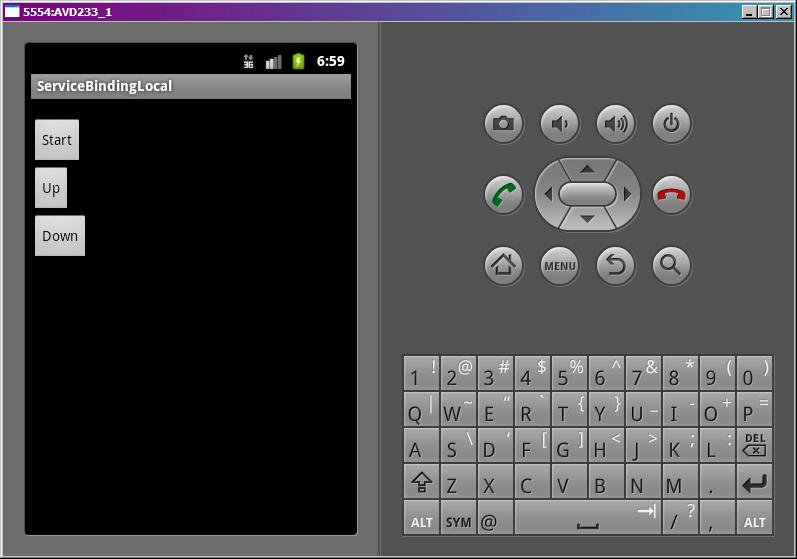
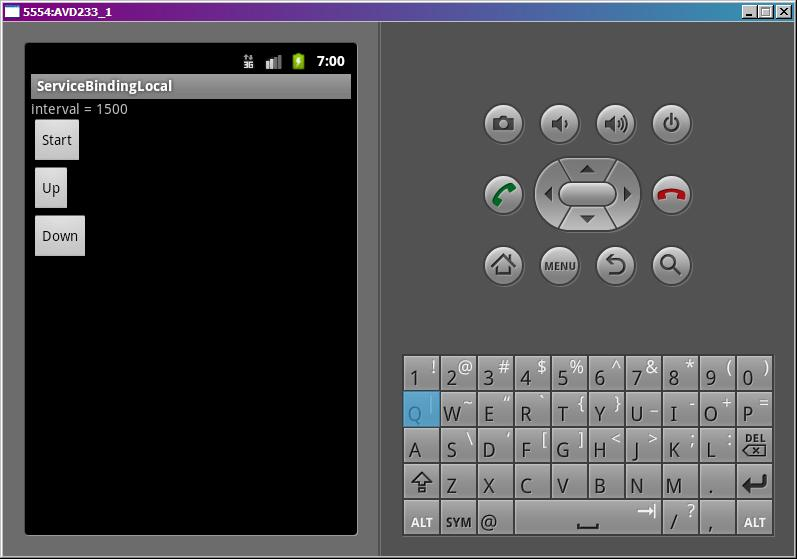

В этом уроке:
- обмен данными в биндинге
Подключаться к сервису мы теперь умеем. В этом уроке попробуем обменяться с ним данными.
В сервисе метод onBind возвращает объект, наследующий интерфейс IBinder. Проще всего использовать для этого объект Binder и расширить его необходимыми нам методами. Т.е. создаем свой класс MyBinder с предком Binder и рисуем в нем свои методы.
При биндинге, в методе onServiceConnected мы получаем объект Binder. Мы можем привести его к типу MyBinder (из сервиса) и вызывать его методы, а реализация будет срабатывать в сервисе, где мы описывали этот класс.
Как вы понимаете, это сработает только, если сервис и приложение выполняются в одном процессе. Поэтому такой биндинг называется локальным.
Нарисуем пример. У нас будет сервис, который с определенным интервалом будет что-то выводить в лог. Мы к нему подключимся, и будем повышать или понижать интервал и получать новое значение интервала обратно.
Создадим проект:
Project name: P0981_ServiceBindingLocal
Build Target: Android 4.0
Application name: ServiceBindingLocal
Package name: ru.startandroid.develop.p0981servicebindinglocal
Create Activity: MainActivity
Добавим в strings.xml строки:
<string name="start">Start</string>
<string name="up">Up</string>
<string name="down">Down</string>Экран main.xml:
<?xml version="1.0" encoding="utf-8"?>
<LinearLayout
xmlns:android="http://schemas.android.com/apk/res/android"
android:layout_width="fill_parent"
android:layout_height="fill_parent"
android:orientation="vertical">
<TextView
android:id="@+id/tvInterval"
android:layout_width="fill_parent"
android:layout_height="wrap_content"
android:text="">
</TextView>
<Button
android:id="@+id/btnStart"
android:layout_width="wrap_content"
android:layout_height="wrap_content"
android:onClick="onClickStart"
android:text="@string/start">
</Button>
<Button
android:id="@+id/btnUp"
android:layout_width="wrap_content"
android:layout_height="wrap_content"
android:onClick="onClickUp"
android:text="@string/up">
</Button>
<Button
android:id="@+id/btnDown"
android:layout_width="wrap_content"
android:layout_height="wrap_content"
android:onClick="onClickDown"
android:text="@string/down">
</Button>
</LinearLayout>Кнопки для запуска сервиса, повышения интервала и понижения интервала.
Создаем сервис MyService.java:
package ru.startandroid.develop.p0981servicebindinglocal;
import java.util.Timer;
import java.util.TimerTask;
import android.app.Service;
import android.content.Intent;
import android.os.Binder;
import android.os.IBinder;
import android.util.Log;
public class MyService extends Service {
final String LOG_TAG = "myLogs";
MyBinder binder = new MyBinder();
Timer timer;
TimerTask tTask;
long interval = 1000;
public void onCreate() {
super.onCreate();
Log.d(LOG_TAG, "MyService onCreate");
timer = new Timer();
schedule();
}
void schedule() {
if (tTask != null) tTask.cancel();
if (interval > 0) {
tTask = new TimerTask() {
public void run() {
Log.d(LOG_TAG, "run");
}
};
timer.schedule(tTask, 1000, interval);
}
}
long upInterval(long gap) {
interval = interval + gap;
schedule();
return interval;
}
long downInterval(long gap) {
interval = interval - gap;
if (interval < 0) interval = 0;
schedule();
return interval;
}
public IBinder onBind(Intent arg0) {
Log.d(LOG_TAG, "MyService onBind");
return binder;
}
class MyBinder extends Binder {
MyService getService() {
return MyService.this;
}
}
}Здесь мы используем таймер – Timer. Он позволяет повторять какое-либо действие через заданный промежуток времени. Кратко распишу принцип действия. TimerTask – это задача, которую Timer будет периодически выполнять. В методе run – кодим действия этой задачи. И далее для объекта Timer вызываем метод schedule, в который передаем задачу TimerTask, время через которое начнется выполнение, и период повтора. Чтобы отменить выполнение задачи, необходимо вызвать метод cancel для TimerTask. Отмененную задачу нельзя больше запланировать, и если снова надо ее включить – необходимо создать новый экземпляр TimerTask и скормить его таймеру.
Итак, в методе onCreate мы создаем таймер и выполняем метод schedule, в котором стартует задача.
Метод schedule проверяет, что задача уже создана и отменяет ее. Далее планирует новую, с отложенным на 1000 мс запуском и периодом = interval. Т.е. можно сказать, что этот метод перезапускает задачу с использованием текущего интервала повтора (interval), а если задача еще не создана, то создает ее. Сама задача просто выводит в лог текст run. Если interval = 0, то ничего не делаем.
Метод upInterval получает на вход значение, увеличивает interval на это значение и перезапускает задачу. Соответственно задача после этого будет повторяться реже.
Метод downInterval получает на вход значение, уменьшает interval на это значение (но так, чтоб не меньше 0) и перезапускает задачу. Соответственно задача после этого будет повторяться чаще.
onBind возвращает binder. Это объект класса MyBinder.
MyBinder расширяет стандартный Binder, мы добавляем в него один метод getService. Этот метод возвращает наш сервис MyService.
Т.е. в подключаемом Activity, в методе onServiceConnected мы получим объект, который идет на выход метода onBind. Далее преобразуем его к типу MyBinder, вызовем getService и вуаля - у нас в Activity будет ссылка на объект-сервис MyService.
Кодим MainActivity.java:
package ru.startandroid.develop.p0981servicebindinglocal;
import android.app.Activity;
import android.content.ComponentName;
import android.content.Intent;
import android.content.ServiceConnection;
import android.os.Bundle;
import android.os.IBinder;
import android.util.Log;
import android.view.View;
import android.widget.TextView;
public class MainActivity extends Activity {
final String LOG_TAG = "myLogs";
boolean bound = false;
ServiceConnection sConn;
Intent intent;
MyService myService;
TextView tvInterval;
long interval;
/** Called when the activity is first created. */
@Override
public void onCreate(Bundle savedInstanceState) {
super.onCreate(savedInstanceState);
setContentView(R.layout.main);
tvInterval = (TextView) findViewById(R.id.tvInterval);
intent = new Intent(this, MyService.class);
sConn = new ServiceConnection() {
public void onServiceConnected(ComponentName name, IBinder binder) {
Log.d(LOG_TAG, "MainActivity onServiceConnected");
myService = ((MyService.MyBinder) binder).getService();
bound = true;
}
public void onServiceDisconnected(ComponentName name) {
Log.d(LOG_TAG, "MainActivity onServiceDisconnected");
bound = false;
}
};
}
@Override
protected void onStart() {
super.onStart();
bindService(intent, sConn, 0);
}
@Override
protected void onStop() {
super.onStop();
if (!bound) return;
unbindService(sConn);
bound = false;
}
public void onClickStart(View v) {
startService(intent);
}
public void onClickUp(View v) {
if (!bound) return;
interval = myService.upInterval(500);
tvInterval.setText("interval = " + interval);
}
public void onClickDown(View v) {
if (!bound) return;
interval = myService.downInterval(500);
tvInterval.setText("interval = " + interval);
}
}В onCreate создаем Intent для доступа к сервису и ServiceConnection. В методе onServiceConnected мы берем binder, преобразуем его к MyService.MyBinder, вызываем метод getService и получаем наш сервис MyService. Теперь мы можем выполнять методы сервиса. Нас интересуют методы увеличения и понижения интервала.
В методах onStart и onStop мы соответственно подключаемся к сервису и отключаемся.
В onClickStart запускаем сервис.
В onClickUp и onClickDown проверяем, что соединение с сервисом есть, и вызываем соответствующие методы сервиса для увеличения или понижения интервала. В качестве дельты изменения интервала передаем 500. В ответ эти методы передают нам новое значение интервала, и мы выводим его в TextView.
Все сохраним и запускаем.

Жмем Start – запускаем сервис. В логах:
MyService onCreate
MyService onBind
MainActivity onServiceConnected
Создается сервис, и мы к нему подключаемся. Биндинг был ранее вызван в onStart и, когда сервис стартанул, мы автоматически подключились. В прошлом уроке мы разбирали такую ситуацию, когда биндинг идет к незапущенному пока сервису.
run
run
run
…
run
Далее с интервалом в одну секунду в лог падает текст run.
Попробуем увеличить интервал. Жмем Up.

На экране появилось текущее значение интервала. И по времени записей в логах видим, что именно с этим интервалом срабатывает задача (вывод текста run в лог) .
Далее можно нажимать Up и Down и наблюдать, как меняется интервал выполнения задачи. Таким образом, мы из Activity подключились к сервису и управляем его работой.
В начале урока я отметил, что все это будет работать, если приложение и сервис в одном процессе. Если же они в разных процессах, то используется немного более сложный вариант для обмена данными. Но это гораздо менее используемый случай, поэтому сейчас я про него не рассказываю. Но попозже об этом обязательно будет статья.